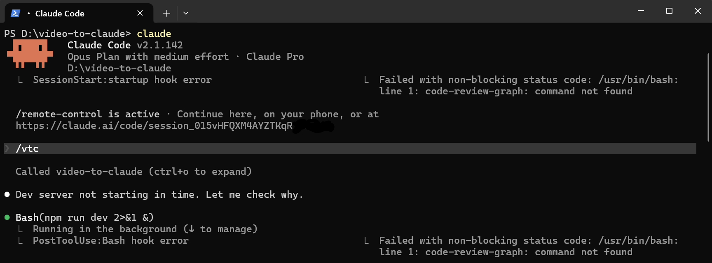
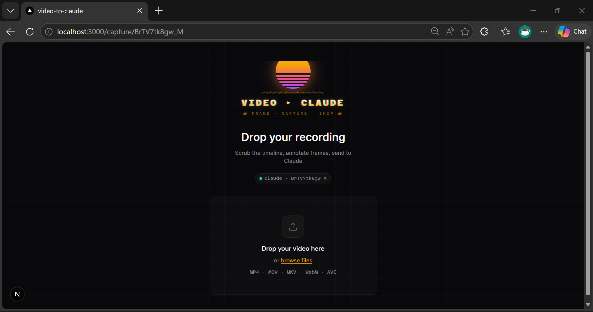
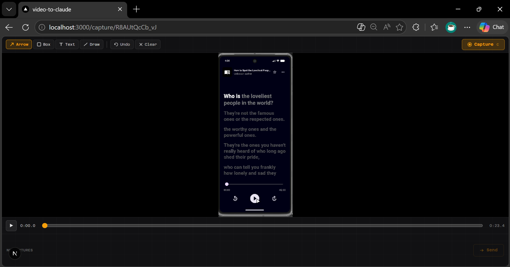
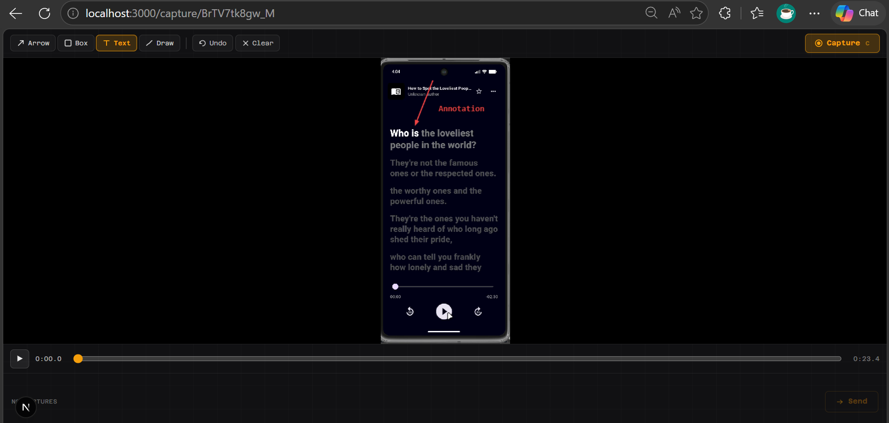
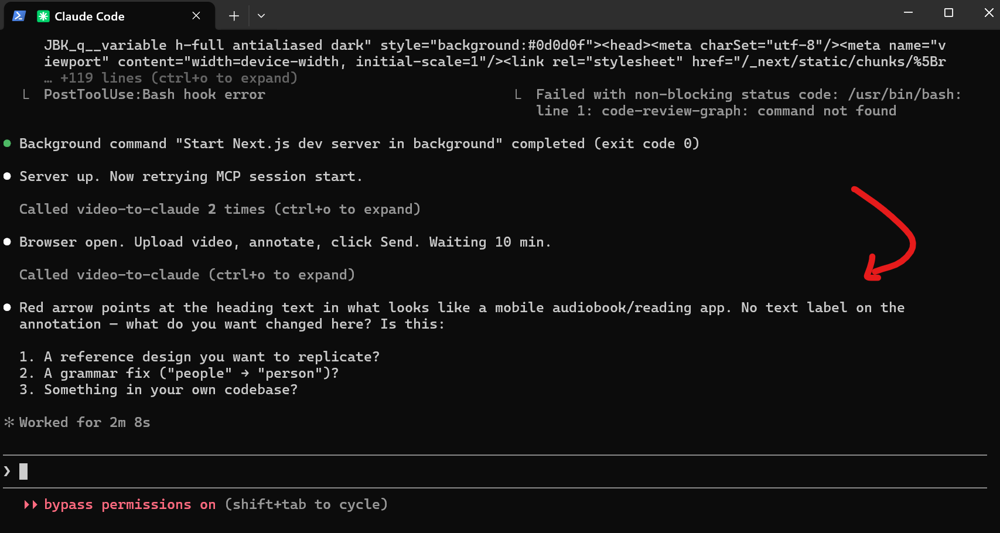
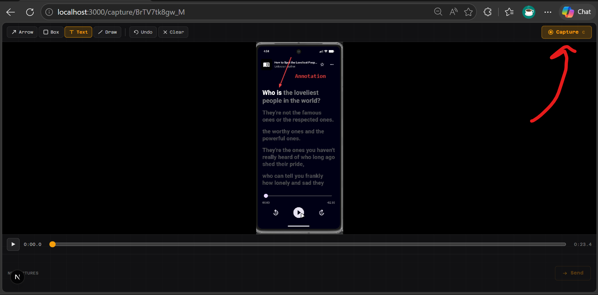
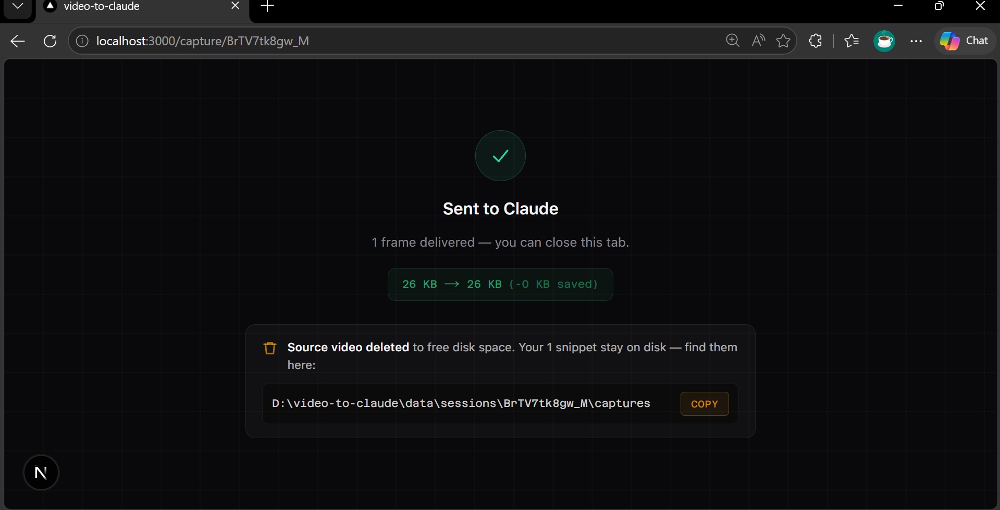

Drop a screen recording. Scrub the timeline, annotate frames inline. One click — annotated WebPs land in Claude Code as vision input.
~/.claude.json. Type /vtc in Claude Code — the UI opens automatically.localhost:3000. Your recordings never leave your machine.The entire flow lives in Claude Code. No separate app to switch to.







Node 18+ required. No Python, no Docker, no cloud account.
Then type /vtc in any Claude Code session. Done.